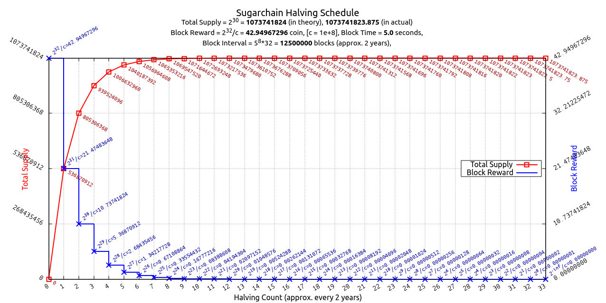

Sugarchain
one-CPU-one-vote, the world’s fastest PoW blockchain
https://sugarchain.org
The meaning of Yumekawa
Sugarchain’s first node software is called Yumekawa (夢川). It can be translated in some ways.
- “Yume (夢)” means dream and “Kawa (川)” means river. So it's
Dream Riverin japanese. - The second letter “Kawa” stands for “Kawaii (可愛い)”. In this case the meaning is
Dreamy Cute. - Also Yumekawa replaces the word
Core(ie: Bitcoin Core). We think it sounds a bit centralized.
Specifications
| Block time: | 5 seconds |
| Difficulty: | SugarShield-N510 (based on Zcash’s modification of Digishield) |
| Block reward: | 42.94967296 SUGAR |
| Halving interval: | 12,500,000 Blocks (approx. 2 years) |
| Total supply: | 1,073,741,824 SUGAR |
| PoW algorithm: | YespowerSugar (based on Yespower 1.0.1) |
| Port: | 34230 (RPC 34229) |
| Premine: | None (No ICO, No Presale, No Founder’s rewards) |
The world’s fastest PoW blockchain
- 5 seconds transaction speed
- 120x faster than Bitcoin
- 30x faster than Litecoin
- 12x faster than Dogecoin
- Stable transaction time:
- Even if the hash power suddenly increases, the block time remains 5 seconds. It is against hash attacks.
- Don’t worry about orphan blocks:
- According to the testnet results, the average orphan rate is under 3% and no problem occurs.
A better halving
- Halving is everything:
- Bitcoin is valuable because its total supply has been strictly limited, unlike traditional currencies.
- This total supply is controlled only by that halving. There is nothing else.
- We made this halving better.
- Block reward:
- The block reward should be to a power of two, so that it halves correctly.
- ie)
2^32/100000000 = 42.94967296 SUGAR
- Halving schedule:
- Interval
12500000 blocks (5^8*32)which is about 2 years (exactly 1.9818619989852864… years). - The total number of times halving will occur is
33 times, over the span of66 years.
- Interval
- Total supply:
1073741824 SUGARin theory, and1073741823.875 SUGARin actual.- The difference is
0.125 SUGAR. One Satoshi (0.00000001) limitation makes this difference. In addition, this number is meaningful. FYI:1 GB = 1073741824 Byte (2^30). - The total supply of Sugarchain is about
51 timesgreater than Bitcoin.
- Halving Chart: 
- Halving Table:

one-CPU-one-vote
“31/Oct/2008 Proof-of-work is essentially one-CPU-one-vote”
Satoshi Nakamoto talked about the importance of decentralized mining in his whitepaper. We want to create a blockchain that anyone can do mining easily without any entry barriers.
- CPU mining only
- YespowerSugar (based on Yespower 1.0.1) is only for Sugarchain, not compatible with other Yespower coins.
- The minimum difficulty (powlimit) is set low enough for two reasons. The first is to handle fast block time; The second is to allow mining on slow CPUs.
- Mining efficiency:
- According to the test results, the most efficient is using 8 threads on a single CPU.
- YespowerSugar is more suitable for older CPUs, because it is essentially a multi-threading resistor. Suitable for smartphones and raspberrypi.
- NO GPU: GPU mining is not possible.
- NO ASIC: ASIC mining is not possible.
Other advantages
- Native segwit (Bech32) address built-in by default: Starting with
sugar1q... - Fast blockchain synchronization: Using sha256d in header indexing, the initial synchronization speed is as fast as Litecoin.
FAQ
- Disk space requirements:
- Blockchain size growth is around
10 MB per 1 dayand 3.65 GB per year.
- Blockchain size growth is around
- Network rules:
- To prevent fraud and timestamp attacks, nodes should be within
70 secondsof accurate internet time, or they will be banned.
- To prevent fraud and timestamp attacks, nodes should be within
- Selfish mining & time warp attack:
- Fraud techniques for manipulating timestamps are already known. We use a future time limit (FTL) to prevent this. Blocks that differ
60 secondsor more from the current head will be banned. (credit: zawy12)
- Fraud techniques for manipulating timestamps are already known. We use a future time limit (FTL) to prevent this. Blocks that differ
- Exchange listing:
- We do not have a listing plan at this moment. However, it will be discussed in our community and will be listed in the future. If you have any suggestions for exchange websites, contact us.
Appendix
-
Block time vs difficulty at first launching on testnet
- To keep the block time 5 seconds, SugarShield-N510 adjusts the difficulty level. Unlike the Zcash’s modification version, we use a moving average of
510 blocks(about 42.5 minutes). It counts from block 1, an adjustment is made at block 511, and the actual control begins at block 512. (log: time-diff) 
- To keep the block time 5 seconds, SugarShield-N510 adjusts the difficulty level. Unlike the Zcash’s modification version, we use a moving average of
-
Nonce distribution at first launching on testnet
- The nonce is randomly well distributed. Difficulty changes but no bias. (log: nonce-diff)

Wallet
- Win64: https://github.com/sugarchain-project/sugarchain/releases/latest
- Win32: comming soon
- Linux64: https://github.com/sugarchain-project/sugarchain/releases/latest
- Linux32: comming soon
- OSX: https://github.com/sugarchain-project/sugarchain/releases/latest
- ARM64: comming soon
- ARM32: comming soon
- Source: comming soon
Cpuminer
Bech32 address is by default and strongly recommended. -t1 uses 1 thread. If you want more hash, increase this number.
- cpuminer-opt-sugarchain: https://github.com/cryptozeny/cpuminer-opt-sugarchain/releases/latest
- Solo mining: Make a file
sugarchain.conf, restart your wallet and run cpuminer-opt-sugarchain (RPC=34229, testnet5 RPC=44229, regtest RPC=45339)
server=1
rpcuser=username
rpcpassword=password
rpcallowip=127.0.0.1
./cpuminer -a yespower -o http://localhost:34229 -u username -p password --coinbase-addr=sugar1q... -t1
- Pool mining:
./cpuminer -a yespower -o stratum+tcp://POOL_ADDRESS:PORT -u sugar1q... -t1
- For mining on Windows, please cheack out our detailed tutorial here: https://github.com/sugarchain-project/Windows-Mining/wiki/Solo-Mining-for-Windows
Pools
Please contact us if you have a new mining pool.
- 1pool@tokyo: https://1pool.sugarchain.org
- 2pool@tokyo: https://2pool.sugarchain.org
- 52hash@china: http://sugar.52hash.com
- rplant@moscow: https://pool.rplant.xyz
- happysensor@korea: http://pool.happysensor.xyz
- hashpex@USA: http://hashpex.com
- skypool@global: https://sugar.skypool.co
Explorer
- 1explorer: https://1explorer.sugarchain.org
- 2explorer: comming soon
- trezor blockbook: https://sugarchain-blockbook.ilmango.work/blocks
Exchanges
- ex4ange (by DobroFenix): https://ex4ange.org/?SUGAR-DOGE
Community
- Discord: https://discord.gg/5fvpTdk
- Forum: https://forum.sugarchain.org
- Bitcointalk: https://bitcointalk.org/index.php?topic=5177722.0
- Telegram: https://t.me/sugarchain
- Twitter: https://twitter.com/sugarchain_dev
License
Sugarchain Yumekawa is released under the terms of the MIT license. See COPYING for more
information or see https://opensource.org/licenses/MIT.
- Copyright © 2009-2010 Satoshi Nakamoto
- Copyright © 2009-2018 The Bitcoin Core developers
- Copyright © 2013-2019 Alexander Peslyak - Yespower 1.0.1
- Copyright © 2016-2018 The Zcash developers - DigiShieldZEC
- Copyright © 2018-2019 The Sugarchain developers